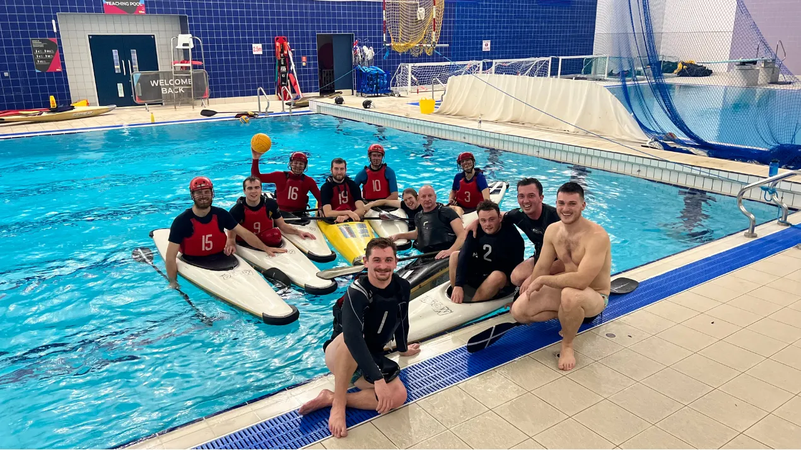

Canoe polo in Bude & Holsworthy
It's fast, it's crazy, but such great fun for everyone! No matter your paddling experience, come and give canoe polo a try with Bude Canoe Club.

When we play
- Winter
- Every Wednesday, 8pm – 9pm, October to March, at Holsworthy Leisure Centre swimming pool. Drills & skills, coaching and match play. It follows the 7pm General Skills session.
- Summer
- Fortnightly on Mondays, 6:30pm – 8pm, on Bude Canal, Breakwater Road.
- Who
- Everyone welcome, from first-timers to experienced players.
- Kit
- All kit and boats provided. Just bring suitable swimwear.
Check Spond for the latest session details.
The Bude Smugglers
Train with the Bude Smugglers Canoe Polo Team for some competitive action. We enter tournaments throughout the year, including:
- Canoe Polo Div 3 National League, Trelewis
- Joy Davis Hull International
- Julie Morris International Welsh Open
Our polo captain, Leigh, runs the polo side of the club, from training nights to picking teams for matches and tournaments. Some tournament entries are free with an All Inclusive Membership.
The Andy Hambley Trophy
Every August Bank Holiday Monday we host our own canoe polo tournament at Bude Lifeboat Day: the Andy Hambley Trophy. The next tournament is on Monday 30th August 2027. Early bird sign up opens in April 2027 and general release in May 2027.
All Inclusive members get entry free and receive a pasty & pint on the day too.
- 2026
- Exeter University
- 2025
- Exeter University
- 2024
- Swansea University
- 2023
- Wellington Canoe Club
Come & join us!
Your first session is always free, and you're welcome to bring a friend. Sign up on our Spond page and drop us a message to let us know you'd like to come along.